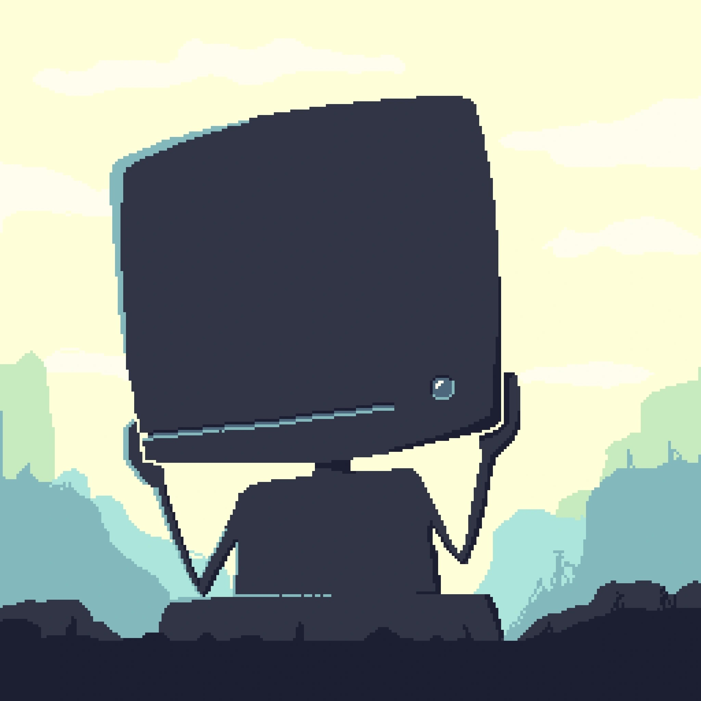
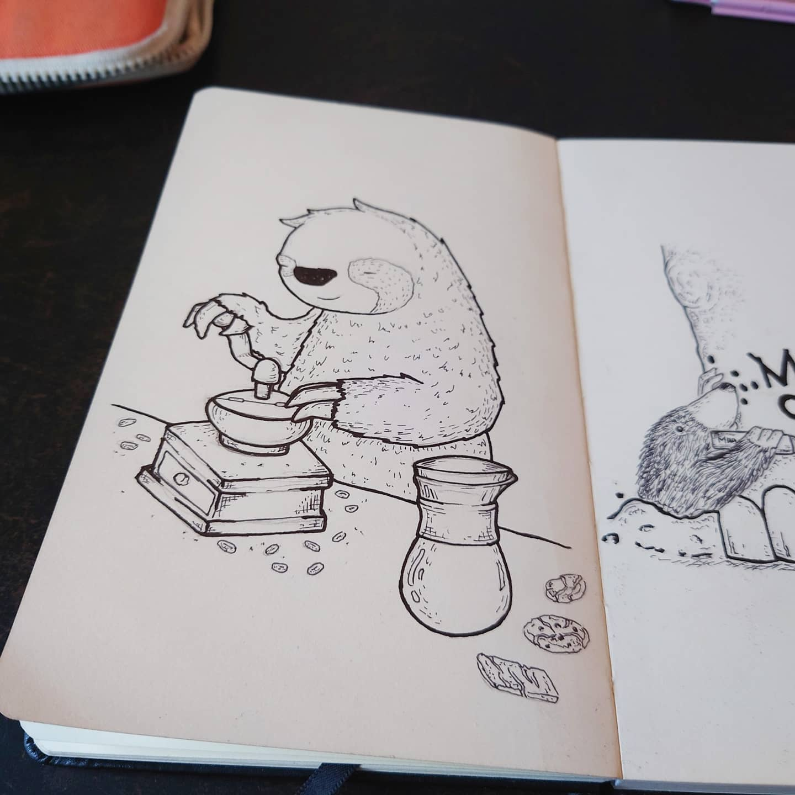
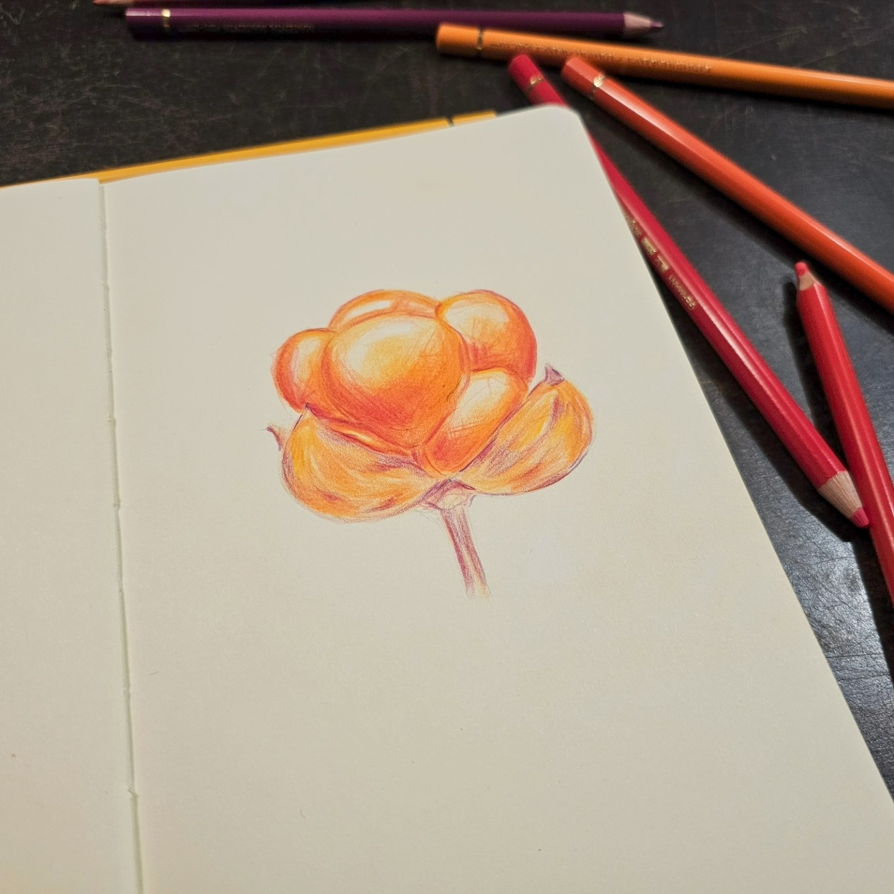

Konst
Jag har ett konstintresse som egentligen får för lite tid men det går i perioder. Jag använder flera olika medium för mitt skapande, både analogt och digitalt. Detta är något som jag jag även fördjupade lite under min studietid på MIUN då jag läste 1 år bild i min utbildning. Jag gick även Media i gymnasiet där jag arbetade med grafisk formgivning och fotografering.



Spel
Jag är även intresserad av att spela mycket spel. Allt från brädspel, rollspel till tv-spel.
Just nu är det rollspel som tar upp en stor del av spelandet där jag för stunden är DM för en kampanj i Drakar och Demoner. Samt att jag får möjligheten att måla miniatyrer som vi använder i vårt spel. En kompination av två intressen helt enkelt.
| # | Brädspel | Rollspel | Tv-spel |
|---|---|---|---|
| 1. | Dead Cells | Drakar och Demoner | Halo |
| 2. | Small World | Mutant | Celeste |
| 3. | Neuroshima Hex | Ur Varselklotet | Fallout |
| 4. | Drakborgen | Dongeons and dragons | Hollow knight |
| 5. | Firefly | Flodskörden | Final Fantasy |
Vill du hitta nya brädspel? Board Game Geek
Vill spela brädspel online? Board Game Arena